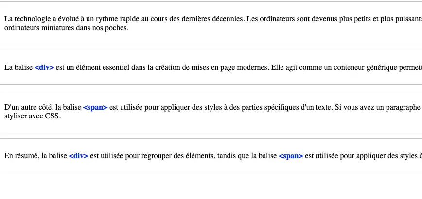

Utiliser correctement les balises <div> et <span> pour grouper et styliser des parties spécifiques du contenu d'une page web.
Considérez le paragraphe de texte suivant et suivez les instructions pour appliquer les balises <div> et <span> de manière appropriée.
La technologie a évolué à un rythme rapide au cours des dernières décennies. Les ordinateurs sont devenus plus petits et plus puissants, et Internet a transformé la façon dont nous interagissons avec l'information. Aujourd'hui, nous portons des smartphones qui sont essentiellement des ordinateurs miniatures dans nos poches.
La balise <div> est un élément essentiel dans la création de mises en page modernes. Elle agit comme un conteneur générique permettant de regrouper des éléments connexes. Par exemple, vous pouvez utiliser une balise <div> pour créer un en-tête qui contient le logo et le titre de votre site.
D'un autre côté, la balise <span> est utilisée pour appliquer des styles à des parties spécifiques d'un texte. Si vous avez un paragraphe et que vous voulez mettre en évidence un mot ou une phrase, vous pouvez entourer ce contenu avec une balise <span> et lui attribuer une classe pour le styliser avec CSS.
En résumé, la balise <div> est utilisée pour regrouper des éléments, tandis que la balise <span> est utilisée pour appliquer des styles à des parties de texte.
Après avoir terminé l'exercice, votre texte devrait contenir des balises <div> autour des parties correspondantes et des balises <span> utilisées pour appliquer des styles à certaines parties du texte.